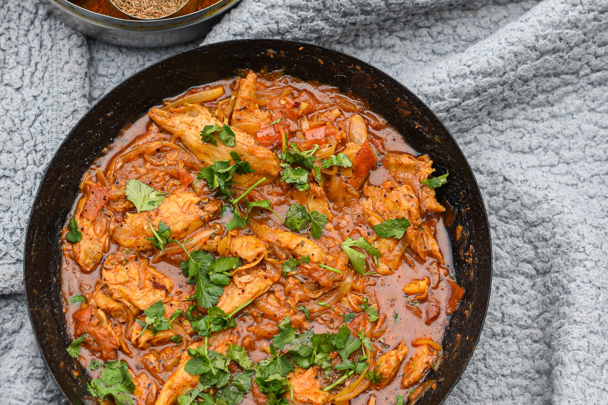
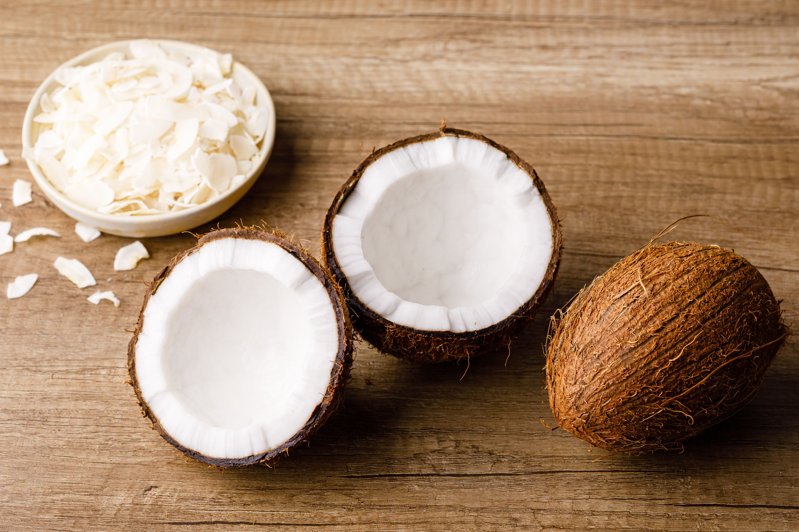
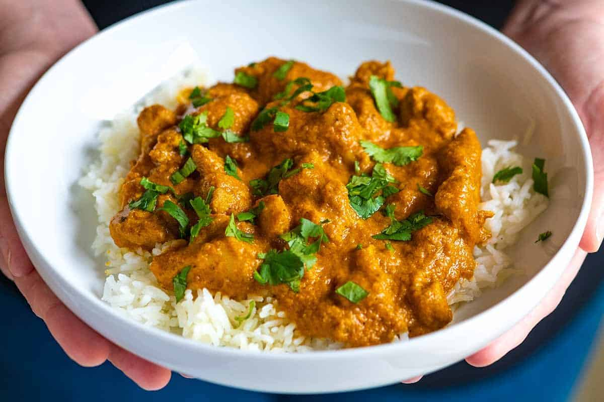

Coconut Chicken Curry
Thai Chicken Peanut Noodles is what you make when you’ve got less than 15 minutes to get dinner on the table and you need a Thai fix! Using chicken mince means no meat prep – and you can switch out with literally any ground meat (beef,
turkey, pork).
Firstly, let me be very upfront that this is by no means an authentic Thai dish. Which is why I don’t even classify it as part of the Thai recipes collection. It’s just a really tasty one-skillet, minimal-prep dinner
that’s full of Thai-inspired flavours. Specifically, Thai Peanut Sauce flavours. All you Thai Chicken Satay fans out there will LOVE it!

Ingredients
- Noodle cake (instant noodles) – Use any instant or ramen noodles you can get your hands on. We’re discarding the seasoning packet and making our own sauce. Using instant noodle cakes is ideal because the crinkly nature of the noodles captures the chicken mince bits. Also, it’s indestructible.
- Thai red curry paste – Our flavour shortcut. There is a time and place for homemade red curry paste. But tonight is not it! (PS. Regular readers who know I’m a bit snobby about my favourite red curry paste brand: Maesri. For this dish, I’m a little more relaxed because … well, you know. Quick ‘n easy midweek meal and all. Anything will do.
- Chicken mince (ground chicken) – Pork and turkey make perfect substitutes, though actually beef works really well too. I’m not convinced about lamb, but then again, Lamb Satay is darned delicious!
- Peanut butter – It’s not peanut sauce without peanut butter! Commercial spread is fine here, though you do get more intense peanut flavour using natural peanut butter (ie. no salt, sugar or oil added).
- Soy sauce – For a touch of extra salt in the dish. I like to use dark soy sauce because it stains the white chicken mince, giving it a nice colour. But light, all-purpose soy sauce, tamari or even mushroom soy will work just fine. Just no sweet soy.
- Vinegar – For an essential touch of sour for balance (yes, it’s used in real Thai Peanut Sauce too). I use cider vinegar here although normal white vinegar will work fine too.
- Coconut milk and chicken broth/stock – Together, these make the sauce for these noodles. Full fat for coconut milk please. If you opt for low fat, do not complain if you are disappointed with the sauce flavour!
- Baby spinach – Takes mere seconds to wilt, and an easy way to up the veg quot. No chopping required, just throw into this dish.


How to make Thai Chicken Peanut Noodles – in 12 minutes!
One might look at the ingredients above (or how delicious the dish looks!) and think, “this can’t take 12 minutes!!“. The trick here is that the only thing you need to chop is the garlic (and toppings) and there’s a nice work flow so you can measure out the ingredients while you’re cooking. Oh – and yes, the noodles are cooked in the same skillet the chicken is cooked in. No pre-cooking required!
- Garlic first, then cook the chicken, breaking it up as you go.
- Red curry paste and soy sauce next, sautéed with the chicken to give it good flavour and colour.
- Chicken stock/broth next, simmered for a bit to take the raw flavour out of it.
- Then squish the noodle cakes in, submerging them as best you can.
- Cook noodle cake 45 seconds on one side, flip, cook another 30 seconds, then break them up.
- Add the remaining sauce ingredients: coconut milk, peanut butter and vinegar. Then give it all a good toss.
- Finally add the baby spinach right at the end. It won’t take much longer than 30 seconds or so to wilt.
- Serve it up! You can either garnish with peanuts and fresh coriander/cilantro before or after serving. I’ve been known to do both. Also, a good squirt of Sriracha chilli sauce won’t go astray!
This is a dish that’s intended to be a quick meal so you don’t need to worry about adding a side dish or similar to get your greens in. You can be very generous with the baby spinach because it wilts down into nothing.